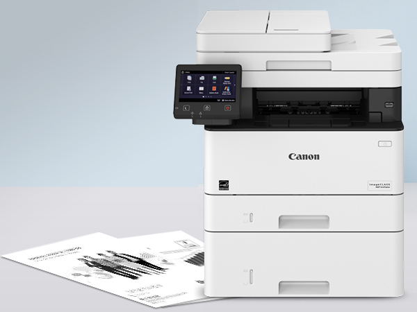
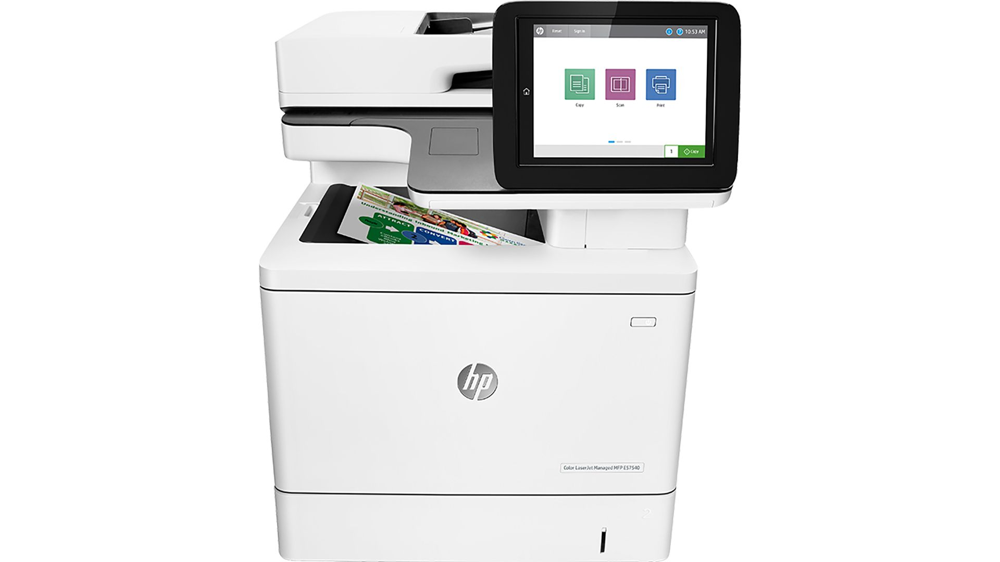
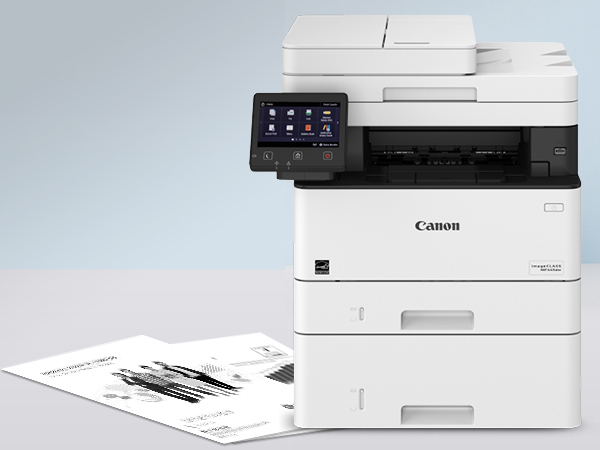
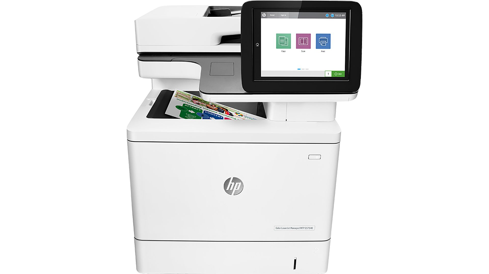

Nuestros servicios
- Renta de impresoras láser y multifuncionales
- Mantenimiento técnico incluido
- Suministro de tóner y consumibles
Nuestras impresoras
 



¿Por qué elegirnos?
Ofrecemos planes flexibles adaptados a pequeñas, medianas y grandes empresas, garantizando equipos confiables y soporte técnico oportuno.
Para conocer estándares internacionales relacionados con impresión y documentación, visite el sitio oficial de la Organización Internacional de Normalización (ISO).